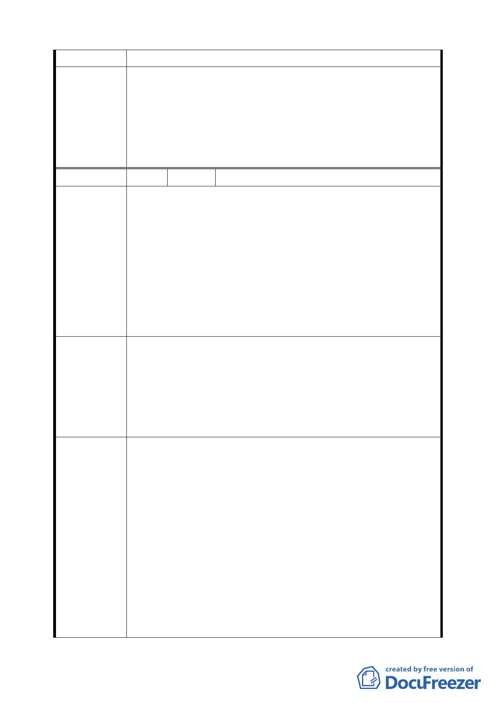

實施日起算。
1.同意陳情民眾所提建議，取消公展計畫中建物高度之管
制，回歸本市土地使用分區管制規則規定辦理。
委員會決議
2.同意發展局所提「配合建蔽率調整，修訂地下開挖率規
定」，維持原公展計畫。
3.延長第二期法定容積×5%之適用至 101 年 6 月 14 日，並取
消第三期時程獎勵規定。
編 號 7 陳情人 三重里江里長輝吉
1.R1 沿南港路一段 30 公尺進深範圍容積率為 300％，然沿經
貿一路（新闢）為 40 米道路，理應比照容積調為 300％。
2.開發時程之獎勵，請依修訂台北市南港經貿園區特定專用
區細部計畫開始，以更多獎勵促進 R1、R17 之街廓開發，
陳 情 理 由 提昇 C12、C13 二代展覽館之周遭門面。
3.C4、C5 本次通盤檢討新計畫供商務設施使用，分區使用規
定不得供作住宅使用，目前三重里及全區均人口住戶最少的
里，大部分土地是南軟一二三期及展覽館以及 C2、C3 之商
業為主，人口比率無法改善。
1.將臨經貿一路之深度 30 米調高容積率為 300％，以促進都
更之可行性。
建議辦法
2.請再延長開發時程獎勵，以修訂細部計畫起算，以更多誘
因促進更新。
3.C4、C5 請准五層樓以上供作住宅使用，以吸引南軟上班人
士就地居住，以提高居住人數創造人潮之活絡。
1.同意發展局所提說明「依本市土地使用分區管制規則第 10
條規定『建築物面臨 30 公尺以上之道路，臨接或面前道路
對側有河川，於不妨礙公共交通、衛生、安全，且創造優美
景觀循都市計畫程序劃定者，容積率得酌予提高』，且經貿
委員會決議
一路 35 公尺係因經貿園區辦理市地重劃與區段徵收作業，
由其他基地共同負擔所致，R1 街廓並無對價付出，且經貿
一路與二路側之住宅區容積率為 120%及 225%基於容積率
訂定之公平一致性，故維持原公展規定，不宜提高容積率」。
2.延長第二期法定容積×5%之適用至 101 年 6 月 14 日，並取
消第三期時程獎勵規定。
3.同意發展局所提「為維持高品質商務機能，商業區不宜放
寬作住宅使用」，維持原公展計畫。
21